Ocho pares y dieciséis PNG íntegros. Baseline privado 743bb7c en8101 y final en8103, ambos con el mismo backend local. UGREEN Nexode65W, UUID f59d84f9-30b3-47a1-8681-6504374d195a, mismo artículo y precio del DTO en Inicio, Buscar y ficha.
8/8 pares con datos comerciales idénticos; 16/16 hashes verificados. Avisos de interfaz: uno antes y cero después. Las ilustraciones Storage aún incluyen texto incrustado «IMAGEN DEMO»: esta comparación acredita composición y avisos, no renovación fotográfica ni eliminación de ese texto de los píxeles.
Capturas entre22:17:42 y22:23:36UTC. Sin fixtures, replay, login, mutaciones, reset o retoque. Manifiesto y DTO.
DTO comercial idéntico; intervalo entre las dos capturas: 3.397s.
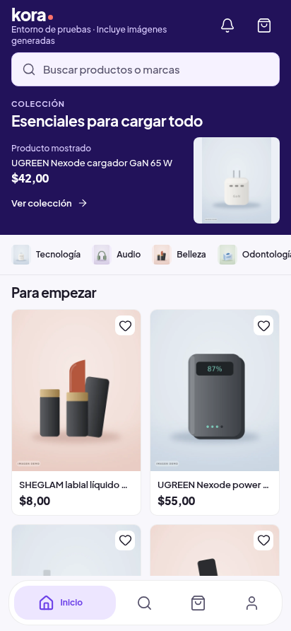
SHA256 450d0e8b7280ec1cb3608f7ea673bba78a47a610387e04762f5cb0e214966ff9
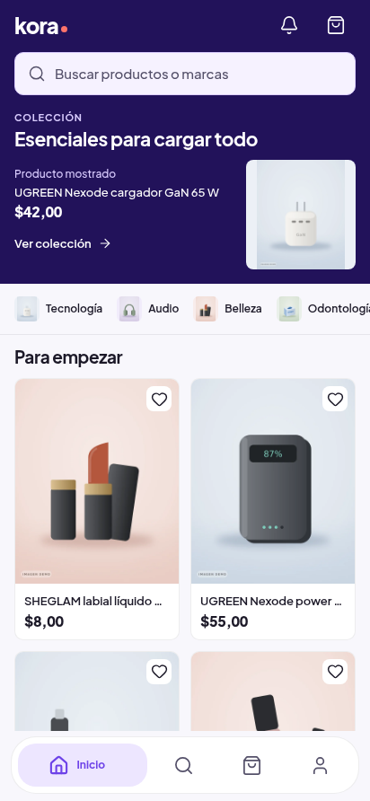
SHA256 03f70a5f6e43c399f3d9559b792e961b9e885ade933912d8c13acf6d06f9ba2a
DTO comercial idéntico; intervalo entre las dos capturas: 1.731s.
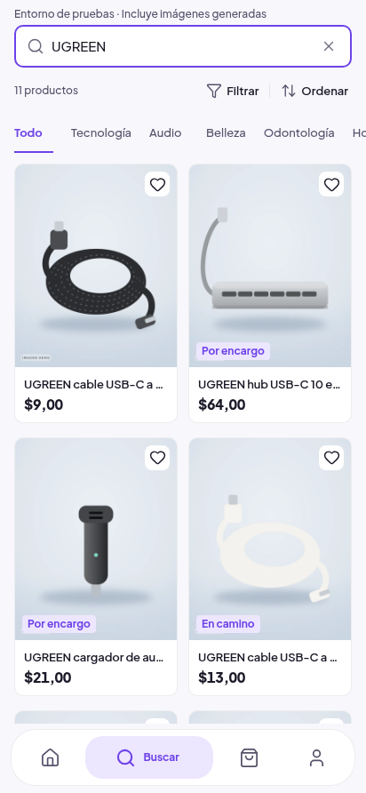
SHA256 f08e23757b8cce349eb17e9fc6280f8f8f90d0490c32cf5f7b86728ce2f154ea
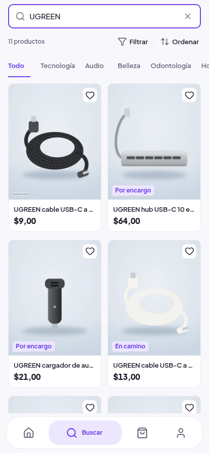
SHA256 ddb4ffea938ca1c89373fb01d628a73dbdfba9c4d6f2facd35e771d36214c8a1
DTO comercial idéntico; intervalo entre las dos capturas: 3.241s.
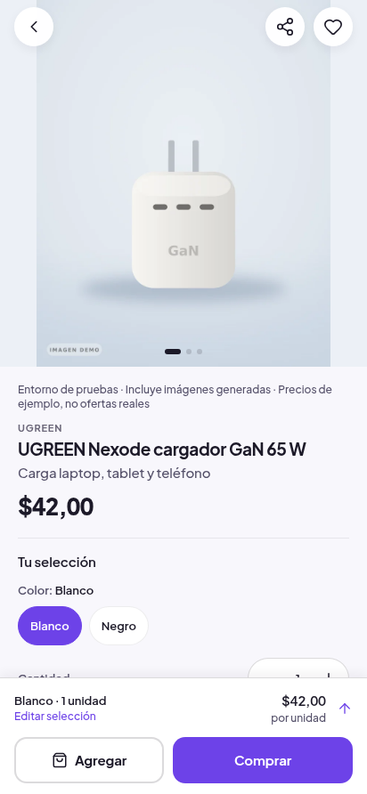
SHA256 276bdb9d46066a83435d4ec8d321b97deb0b7eaf1bdaf4179482354c6f74c27d
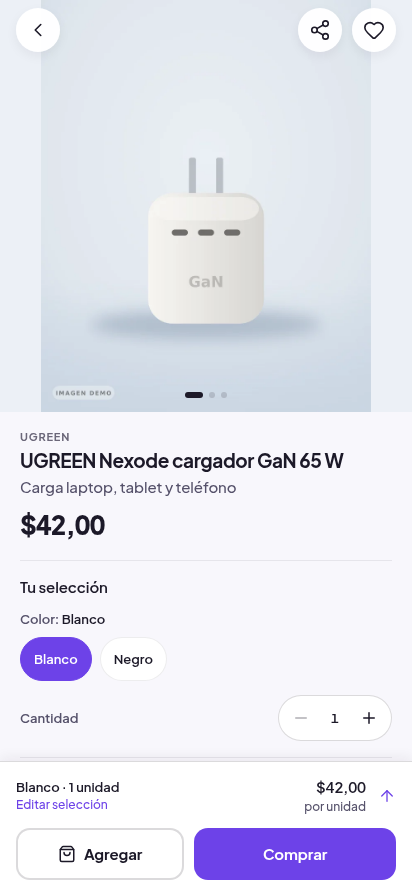
SHA256 4e401c0f91c8981273a71d8c2070751d1165c8dc98dbdb3b3bb1b0c9ac825fda
DTO comercial idéntico; intervalo entre las dos capturas: 3.319s.
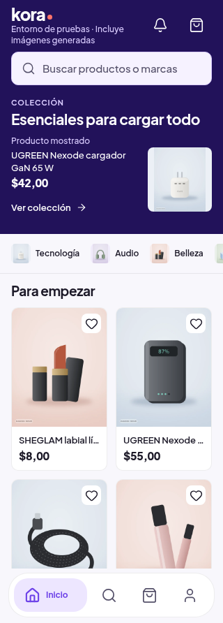
SHA256 006cd581afbbdc3426992aa14a585635395ba9a68a25b216e207740453794a75
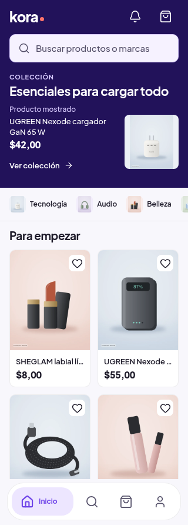
SHA256 a128b1877033d0e6750eac78189872593fb3dd92086840b07435a83bc491729a
DTO comercial idéntico; intervalo entre las dos capturas: 3.299s.
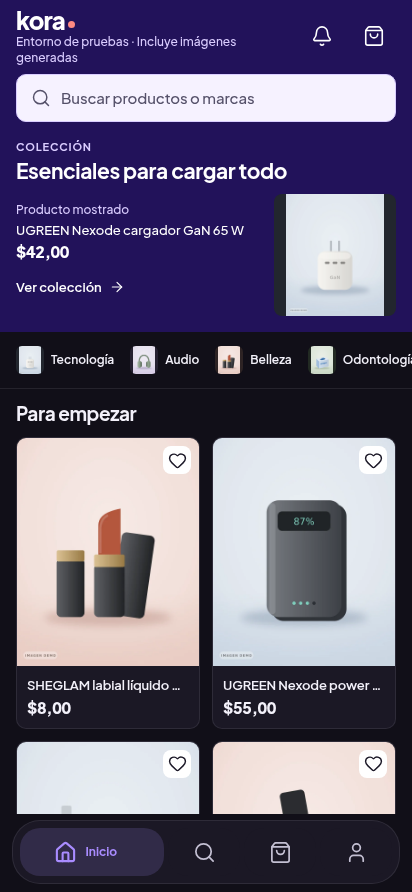
SHA256 612b058202f19a8ad073ea010bb0e4debd8f3915d7e2c1185250c63edb1b2dbc
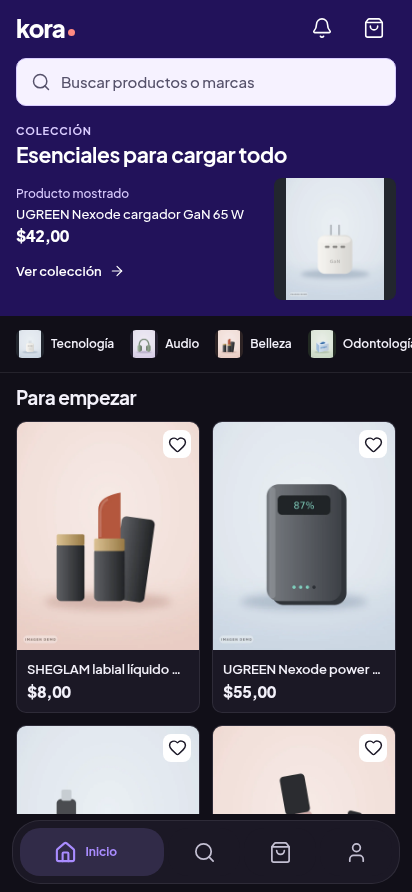
SHA256 0c316f0f03d3ad29f53f69433eb6c915a22dc4dc1efc59f1bd3d131161f469d1
DTO comercial idéntico; intervalo entre las dos capturas: 1.691s.
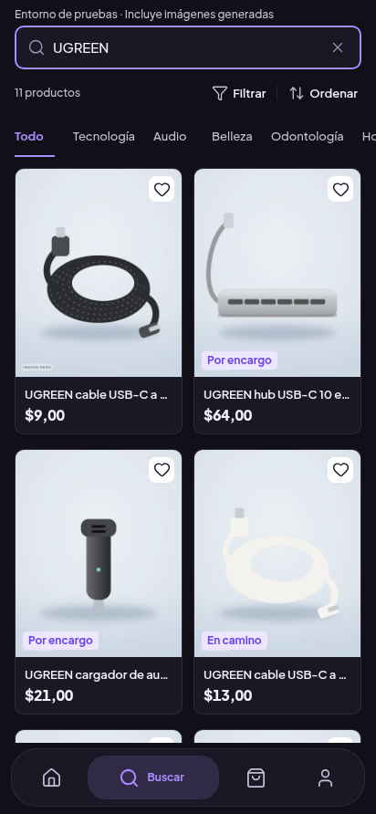
SHA256 e3ffe84dfcc73c520b705a19d73e18b27907976ee07624083f7cbae2f50fde85
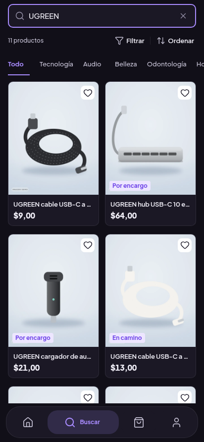
SHA256 b9adf70ca7ad6cc3c06b4455b4c2988cc1db8da54249d7fdd59befb3bb634ac6
DTO comercial idéntico; intervalo entre las dos capturas: 3.324s.
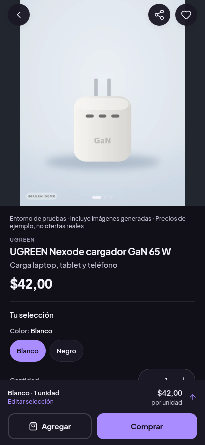
SHA256 739ee5bbe3ef9db61d6f6916f0d7d309280193b0934f689844ba90458f5ae46b
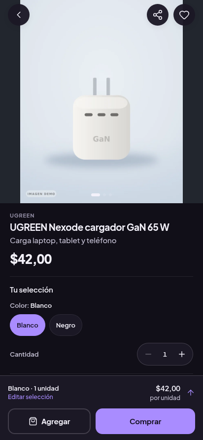
SHA256 043bb20ca916d974e870f2ee8978356dbdb840a0d11d7c9c207129f8a6d8a160
DTO comercial idéntico; intervalo entre las dos capturas: 3.622s.
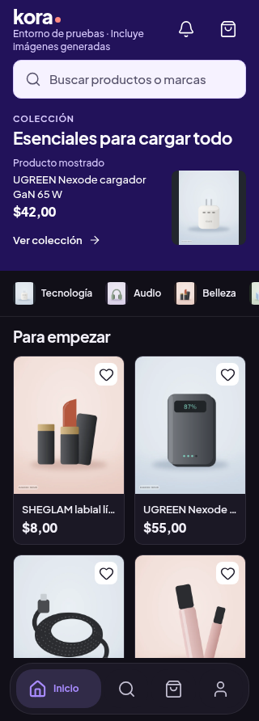
SHA256 1e098b4fd09b79538b10ea62ba0f1ecebd7bdc29033f1f35508aa6a47b587f53
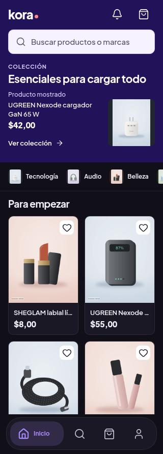
SHA256 bd92fdf14ba86505f712bac8abef01437d799466d9e6e28b4f18c6d506cd13d6